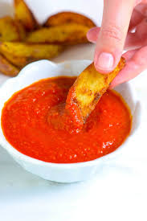

Ketchup

The best ketchup in the world!
This is a receipe which will tell you how to make the best ketchup in the entire world! Enjoy!
Ingredients
- 4 good-size onions, very roughly chopped
- 250g celery, very roughly chopped
- 5 tbsp vegetable or olive oil
- 4 garlic cloves, sliced
- 1 tsp ground coriander
- 1 short cinnamon stick
- 1 tsp allspice
- ½ tsp ground black pepper
- 2 tsp celery salt
- 2kg ripe tomatoes, roughly chopped
- 3 tbsp tomato purée
- ½ tsp Tabasco sauce
- 200ml white wine vinegar
- 200g golden caster sugar
Directions
- Put the onions and celery into a food processor and whizz until finely chopped. Heat the oil in a very large saucepan, add the onions and celery, cover, then soften over a low heat for 5 mins. Add the garlic, cook 5 mins more, then tip in the spices and cook for 1 min.
- Now stir in all remaining ingredients and bring to the boil. Keep on a bubbling simmer, uncovered, for 1 hr until the tomatoes are squashy and the liquid has reduced by several inches. Discard the cinnamon stick.
- Whizz the mix with a stick blender until smooth, then sieve into a bowl. The ketchup will thicken a little when it cools, but if yours seems very runny (this will depend on the juiciness of your tomatoes), put it back on the heat and cook a little longer, stirring often, until reduced. Keep the ketchup in an airtight container in the fridge for up to 3 months, or freeze in batches. If you like, keep in sterilised bottles or jars for up to 6 months - see tip, below.